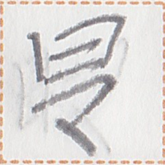

← PreviousIndexNext →
English: Did you guys understand what I mean?
Chinese: 你们明白我的意思了吗？
Chinese (pinyin): Nǐmen míngbai wǒ de yìsi le ma? (no le ok)
Pekzep (latin transcription): mua2 ge can2 pai2 a zep1 xa2 yn2?
Pekzep (hanzi transcription): 汝等識我之言意乎？
Pekzep (linzklā): 
Sound:
Analysis: